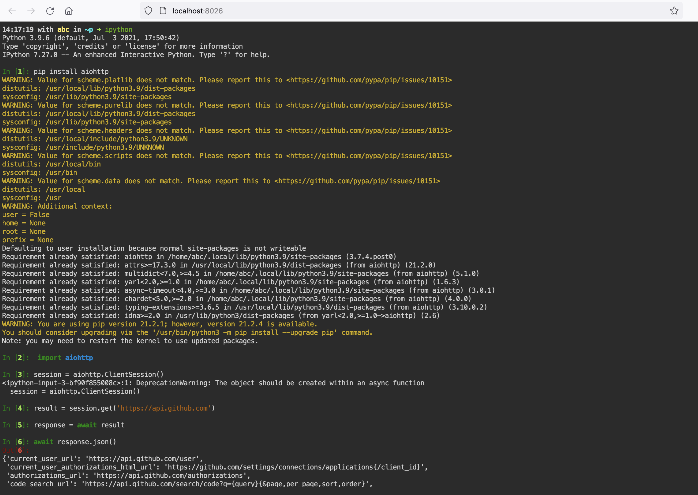
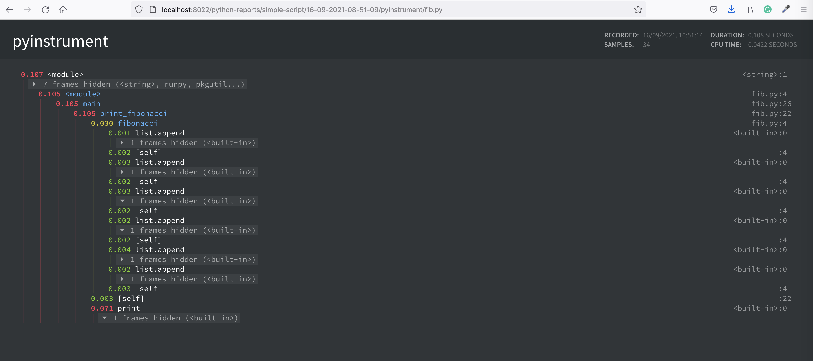
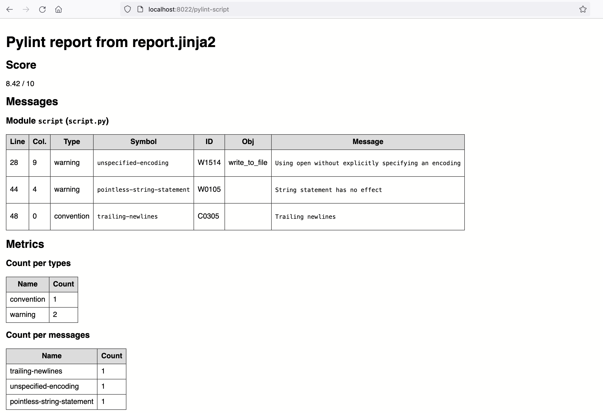

Tutorial
This doc contains example tutorials how to use Python tooling included in Python workspace.
To start, open Quickstart page for quick access to VS-code and terminal.
IPython and Notebooks
IPython provides a rich toolkit to help you make the most of using Python interactively. One of its main components is a powerful interactive Python shell. IPython is very handy. For example, starting with IPython 7.0, and when using Python 3.6 and above, IPython offer the ability to run asynchronous code from the REPL.
To start IPython kernel, open workspace terminal ad execute ipython. Below is an example of installing packages and
evaluation of async code in IPython shell - something you cannot do in a standard python shell:

NOTE: in order not to increase the Workspace size, by default Python Workspace can only render notebooks. Workspace does not have installed all the requirements to run notebooks. This is can be done easily. As soon as you try to run a cell in the note, you will see a pop-out winndow suggesting to install missing dependencies. You just need to accept.

Python environments
Venv
The venv virtualenv is a very popular tool that creates isolated Python environments for Python libraries. This module provides support for creating lightweight “virtual environments” with their own site directories, optionally isolated from system site directories. Each virtual environment has its own Python binary (which matches the version of the binary that was used to create this environment) and can have its own independent set of installed Python packages in its site directories.
Create virtual environment called env-1
python3 -m venv env-1
Activate environnment
source env-1/bin/activate
Poetry
Create our project
poetry new poetry-demo
cd poetry-demo
Specify dependencies in pyproject.toml.
By default, poetry creates a virtual environmen. There are several ways to run commands within this virtual environment. To run your script simply use poetry run
poetry run python your_script.py
The easiest way to activate the virtual environment is to create a new shell with poetry shell
poetry shell
Python tooling
Python-report
Python-report is a small utility that tryies to generate various reports and artefacts from your python project, such as linting report; run tests and make HTML report; make auto-documentation and profiling visualizations. Unit test statistics will be visualised with the browser-based dashboard.
cd /home/examples/simple-script && python-report
The resulting report will be produced to the folder /home/static-server/<NAME-OF-PYTHON-PROJECT-FOLDER>/<TIMESTAMP>.

(In addition, all pytests statistics will be collected, and available in foldder /home/static-server/<NAME-OF-PYTHON-PROJECT-FOLDER>).
Python-report is a simple bash script /home/abc/utils/python-report.sh. You can also use separately any of the toos.
Pytest-html-reporter
Pytest-html-reporter generates a beautiful static html report based on pytest framework. These reports result in dashboard website, that shows all historical tests and statistics.

To execute tests, and generate report with Pytest-html-reporter, cd to the python project tests folder,
and execute pytest ./ --html-report=./pytest-report. The results will be produced to the sub-folder ./pytest-report.
For instance, execute tests and generate report for the example python project execute
cd /home/examples/simple-script && pytest ./ --html-report=/home/static-server/my-pytest-report
the output will be in folder /home/static-server/my-pytest-report that is served with a Static-file server

Pdoc3
Auto-generate API documentation for Python projects. Let's generate autodocumentation website for the example python project, with output into `` where it can be viewed with Static-file server
cd /home/examples/simple-script && pdoc --html --output-dir /home/static-server/pdoc-html ./
Vprof
Vprof is a Python package providing rich and interactive visualizations for various Python program characteristics such as running time and memory usage.
Vprof is a browser-based profiling tool. Here is an example of profiling scripts from the example python project:
cd /home/examples/simple-script && vprof -H 0.0.0.0 -p 8031 -c cpmh fib.py
cd /home/examples/simple-script && vprof -H 0.0.0.0 -p 8031 -c cpmh script.py
SnakeViz
SnakeViz is a browser based graphical viewer for the output of Python’s cProfile module. Let's profile and visualize one of python modules in the example project:
cd /home/examples/simple-script && python -m cProfile -o script.prof script.py
snakeviz -s -p 8030 -H 0.0.0.0 script.prof
You will see thae link appeared in the terminal, open it in browser

Flameprof
Flameprof is a Flamegraph generator for python's cProfile stats.
Let's profile and visualize one of python modules in the example project:
cd /home/examples/simple-script && python -m cProfile -o script.prof script.py
flameprof script.prof > script.svg

Pyinstrument
Pyinstrument is a Python profiler. A profiler is a tool to help you 'optimize' your code - make it faster. It sounds obvious, but to get the biggest speed increase you must focus on the slowest part of your program. Pyinstrument helps you find it!
Profile and visualize one of python modules in the example project:
mkdir -p /home/static-server/profiling/basic-python-script
pyinstrument -t -r html -o /home/static-server/profiling/basic-python-script/p2 script.py

cProfile
cProfile is recommended for most users; it's a C extension with reasonable overhead that makes it suitable for profiling long-running programs. Profile and visualize one of python modules in the example project:
cd /home/examples/simple-script && python -m cProfile script.py >> /home/static-server/cprof.tx
Pylint-json2html
A pylint JSON report file to HTML: pylint is used to generate a JSON report, and this tool will transform this report into an HTML document:
pylint script.py | pylint-json2html -f jsonextended -o script.html

Pre-commit
Git hook scripts are useful for identifying simple issues before submission to code review. We run our hooks on every commit to automatically point out issues in code such as missing semicolons, trailing whitespace, and debug statements. By pointing these issues out before code review, this allows a code reviewer to focus on the architecture of a change while not wasting time with trivial style nitpicks.
The example python project has a pre-commit configuration file:
cd /home/examples/simple-script && pre-commit install
pre-commit run --all-files
Schedule python jobs
Workspace inncludes Cronicle - a powerful scheduling tool, that has a browser-based UI with dashboards, allows to configure resource limits for jobs and much more!
Python Workspace includes an example script that fetches today's exchange rates:
cd /home/examples/exchange_rates
python fetch-rates.py
The script will fetch today's exchange rates from and output result to the folder /home/static-server/exchange-rates_<DATE>.json. This
folder is served by the Static-file server
Fetching echange rates - is a typical problems for nearly every business, that is working on the international market. You can schedule execution of this script to fetch exchange rates daily
NOTE: Scheduling jobs is especially useful when the Workspace is running on a cloud server. Read here how to launch workspace in cloud.